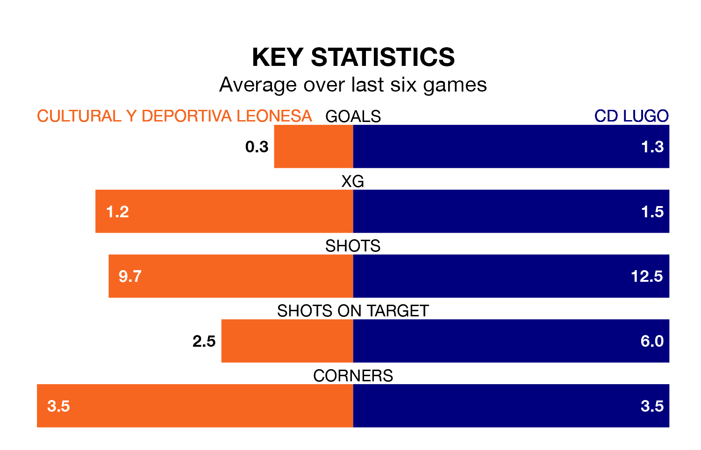

Cultural y Deportiva Leonesa face CD Lugo at the Estadio Municipal Reino de León on Sunday looking to secure a first win in 11 Primera Division RFEF Group 1 games.
Cultural y Deportiva Leonesa have lost two and drawn eight matches since they last earned three points – against Deportivo La Coruña on January 14.
They face a Lugo side who have won three and drawn five over that time.
In Miguel Bañuz Antón, Cultural y Deportiva Leonesa can rely on one of the league's safest pair of hands. He has kept 13 clean sheets in his 25 appearances this season, and no 'keeper has prevented the opposition scoring more often in Primera Division RFEF Group 1.
In Lugo's net, Jose Goncalo Macedo Tabuaco has four clean sheets in 12 games. He has conceded a goal every 98 minutes, 80% more often than the 173 minutes between goals for Bañuz Antón.
The hosts are sixth in the table after 29 games, of which they have won 11 and drawn 12, earning 45 points.
The away team are two places behind Cultural y Deportiva Leonesa in eighth, with 10 wins and 10 draws putting them on 40 points.
With 25 goals in 29 games so far this season, Cultural y Deportiva Leonesa are scoring at below the league average rate with 0.9 goals per game. But they are conceding fewer than average too, letting in 21 goals at a rate of 0.7 per game.
Lugo are also below average scorers, with 0.9 goals per game, compared to a league average of 1.0. They have conceded 1.0 goal per game.
Cultural y Deportiva Leonesa's last match was on Sunday, a 0-0 draw against Osasuna B.
Lugo beat Sestao River Club 4-3 last time out, also on Sunday, with Leandro Antonetti (two), Mario Da Costa López and Sergio Aguza Santiago on the scoresheet.
Updated: 12:39 (UTC), 26/03/24